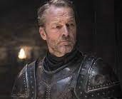

House Targaryen
House Targaryen of Dragonstone is a noble family of Valyrian descent who once ruled the Seven Kingdoms of Westeros. The Targaryen sigil is a three-headed dragon breathing flames, red on black. The house words are "Fire and Blood". It eventually became the first royal house of the Seven Kingdoms, as House Targaryen of King's Landing.
The only family of dragonlords who survived the Doom of Valyria, the Targaryens left the Valyrian Freehold twelve years before the Doom. They resided for more than a century at Dragonstone castle on Dragonstone island, until Aegon the Conqueror and his sister-wives, Visenya and Rhaenys, began the first of the Wars of Conquest in 2 BC.
During Aegon's Conquest, the family built the Aegonfort in the new capital city of King's Landing. The Aegonfort was later torn down and replaced by the Red Keep, which remained their main seat for the duration of their dynasty, and which housed the Iron Throne. Their original castle was almost always given to the heir to the throne, the Prince of Dragonstone. The Targaryens eventually built the summer residence Summerhall, which has been given to several younger sons of the family over time.
House Targaryen ruled as the Kings of the Andals, the Rhoynar, and the First Men, the Lords of the Seven Kingdoms, and the Great House of the crownlands for nearly three hundred years. Seventeen male Targaryens ruled from the Iron Throne. The dynasty ended with the death of Aerys the Mad King during Robert's Rebellion, in which the Targaryens were overthrown and replaced by House Baratheon. The two surviving children of Aerys II, Viserys and Daenerys Targaryen, fled into exile, and have resided in the Free Cities of Essos ever since.
According to a semi-canon source, members of lesser branches of the family left Casterly Rock and developed a nearby village into the city of Lannisport, forming House Lannister of Lannisport. Meanwhile, the Lannisters of Casterly Rock grew to become Kings of the Rock. The first known King of the Rock was Loreon I Lannister, although Lann the Clever has posthumously been called by the same title. Loreon gained House Reyne as his vassals and defeated the Hooded King, Morgon Banefort.
Daenerys Targaryen
Viserys Targaryen
Aerys II Targaryen
Daenerys Dragons
Dragons are massive, flying reptiles that can breathe fire. They are rumored to have a strong connection to magic, which seems to be proven true when magic begins to return to the world after the birth of the first three in over two hundred years. Dragons possess awesome and devastating power, capable of laying waste to armies and burning entire cities to ashes. Men who were able to tame and ride dragons as beasts of war used them in battle and to forge vast empires across the continents of Essos and Westeros. The greatest of these empires was the Valyrian Freehold forged by the Valyrian dragonlords.
Aegon I Targaryen and his sisters used the last three surviving dragons in the world to conquer and unify the Seven Kingdoms of Westeros. For generations, the dragon-kings ruled over much of Westeros - but the dragons eventually died out after nearly a century and a half, and the species was subsequently considered to be extinct.
At the same time that the War of the Five Kings began in Westeros, Daenerys Targaryen was in possession of three petrified dragon eggs. They were given to her as a wedding gift, beautiful to look upon and valuable beyond comprehension, but otherwise useless. However, in a shocking display of old magic, Daenerys miraculously hatched the eggs and for the first time in generations, dragons filled the skies.
Drogon

Viserion
Rhaegal
Close to the Targaryen's
Daenerys Targaryen made a lot of enemies on Game of Thrones, but she also had plenty of great friends throughout her journey to becoming queen.
Daenerys Targaryen was one of the most powerful characters on Game of Thrones, so unsurprisingly, she gained a lot of enemies over the course of the series. But she also had plenty of loyal and supportive allies that helped her throughout her journey.
Jorah Mormont

Khal Drogo
Missandei
Daario Naharis

Barristan Selmy
Grey Worm